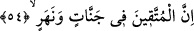
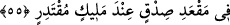

Küçük de olsa günahı küçümseme,
Dağlar da küçük taşlardan oluşmuşlardır.
54. Takvâ sâhipleri cennetlerde ve ırmakların kenarlarında,
“Takvâ sâhipleri” küfür ve günahlardan sakınanlar “cennetlerde” yani, nimetleri ve
oraya girecek olanlar için hazırlanan şeyleri anlatılamayacak nitelikte değeri çok büyük
bahçelerde “ırmakların kenarlarındadırlar.” Bu ırmaklar, su, şarap, bal ve süt
ırmaklarıdır.
55. Güçlü ve Yüce Allah’ın huzurunda hak meclisindedirler.
Âyet-i kerîme’nin mânâsı şöyle olur; onlar, dünya meclislerinin aksine günah
işlemekten ve boş laf etmekten uzak ve esenlikte, razı olunacak hak mekan ve hak
meclisindedirler.
Âyette geçen “huzurunda” anlamındaki kelimeyle yer ve mesâfe yakınlığı değil, itibar
ve makam kasdedilmiştir.
Âyetin mânâsı toplu olarak şöyle olur: Takva sâhipleri, kudretine karşı konamayan,
mülkünün büyüklüğüne erişilemeyen, hiç bir şey mülkü dışında kalamayan Allah’ın
yakınlarıdır. Mutlulukların tamamını ve gıpta edilecek, imrenilecek her şeyi içine alan
bu mertebeden daha üstün bir şeref var mı?
Âyet-i kerîme metninde geçen “muktedir” kelimesi, “hiç bir şeyin âciz
bırakamayacağı kâdir, iktidarı sonsuz” demektir.
et-Te’vilâtü’n-Necmiyye’de denilmiştir ki; muttakîler; yâni mâsivâdan, Allah’tan
başka her şeyden sakınanlar, vuslat cennetlerinde, mârifet ve hikmet sularının
ırmaklarındadırlar. Bu ırmaklara dalarlar, irfanın, ilâhî atâ ve ihsânın en parlak
incilerini çıkarırlar. Zâtî vahdet makamında, ilâhî huzur makamındadırlar. Sevgili
Peygamberimiz’in “Rabbimin huzûrunda gecelerim de bana yedirip içirir”[162] hadis-i
şerifinde buyurduğu gibi.
Keşfü’l-esrâr’da şöyle gelmiştir: “Inde” kelimesi yakınlık ve tahsis özelliğine
sâhiptir. Yâni Hakka yakın olanlar yarın o sarayda bu özellik sayesinde bulunacaklardır.
Hz. Peygamber ise (s.a.) bugün bile bu sarayda bu özelliğe sâhiptir. Havâs ehlinin yarın
elde ettiğinde iftihâr edeceği rütbe bugün onun için düşük bir pâyedir. Yarın elde
edeceği yüce mertebeyi kim anlatabilir?